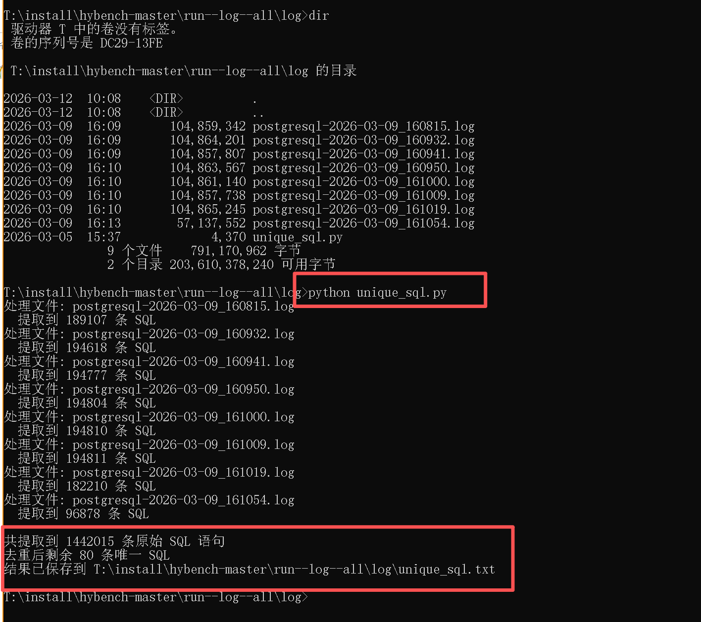
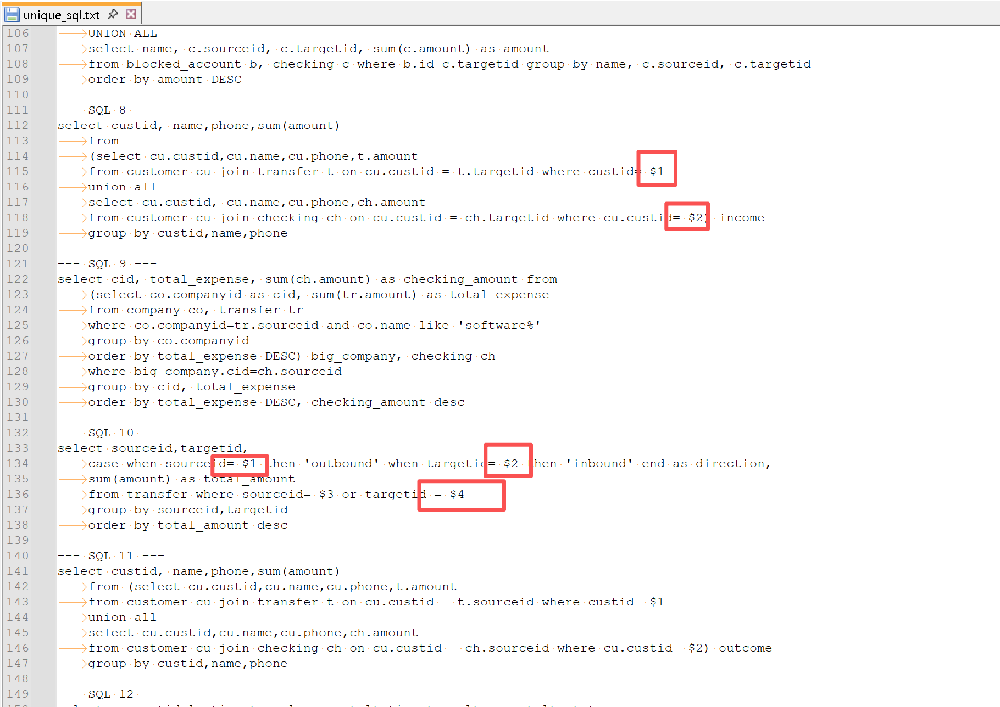

从 pg_log 自动提取 SQL text 程序源码
1. 功能说明
从 postgresql_xxx.log 日志（auto_explain 抓取）中自动分析并提取慢 SQL text（自动去重）。
2. 使用方法
直接将该 Python 程序放到日志文件所在目录下执行，它会自动分析当前目录下的所有 *.log 日志文件。
3. 示例
从 8 个 postgresql-2026-xxxx.log 文件中，共提取到 1,442,015 条原始 SQL 语句，去重后剩余 80 条唯一 SQL，并保存在当前目录下的 unique_sql.txt 文件中。
执行过程

{kind=link}
执行结果

{kind=link}
4. 源码
4.1 unique_sql.py
## ***== cat unique_sql.py ==***
## ***== All rights reserved. ==***
## ***== Copyright © dbnotes.cn. ==***
import re
import glob
import os
def normalize_sql(sql):
"""压缩空白，用于去重（不影响输出的原始格式）"""
return re.sub(r'\s+', ' ', sql).strip()
def extract_sql_from_file(filepath):
"""
从单个日志文件中提取所有完整的 SQL 文本（可能跨多行）
"""
sql_list = []
try:
with open(filepath, 'r', encoding='utf-8', errors='ignore') as f:
lines = f.readlines()
except Exception as e:
print(f"读取文件 {filepath} 出错: {e}")
return sql_list
i = 0
n = len(lines)
# 常见计划操作符的关键词，用于识别计划开始
plan_keywords = ['->', 'Index Scan', 'Seq Scan', 'Bitmap Heap Scan', 'Bitmap Index Scan',
'Nested Loop', 'Hash Join', 'Merge Join', 'GroupAggregate', 'HashAggregate',
'Sort', 'Limit', 'WindowAgg', 'Gather', 'Memoize', 'Incremental Sort',
'CTE Scan', 'Function Scan', 'Values Scan', 'Subquery Scan', 'Materialize',
'Result', 'Append', 'Merge Append', 'Recursive Union', 'LockRows', 'ModifyTable',
'Insert', 'Update', 'Delete', 'TRUNCATE', 'Copy', 'Foreign Scan', 'Custom Scan']
while i < n:
line = lines[i]
if 'LOG: duration:' in line:
# 开始收集条目内容（后续所有行直到下一个 LOG:）
i += 1
block_lines = []
while i < n and 'LOG:' not in lines[i]:
block_lines.append(lines[i].rstrip('\n'))
i += 1
# 在 block_lines 中查找 Query Text
for idx, bline in enumerate(block_lines):
stripped = bline.lstrip()
if stripped.startswith('Query Text:'):
# 提取该行后面的 SQL 部分
sql_parts = []
# 当前行 SQL 部分
current_sql = stripped[len('Query Text:'):].lstrip()
if current_sql:
sql_parts.append(current_sql)
# 继续向后收集，直到遇到 Query Parameters 或计划开始
## ***== Copyright © databasenotes ==***
for j in range(idx + 1, len(block_lines)):
next_line = block_lines[j]
stripped_next = next_line.lstrip()
# 如果遇到 Query Parameters，停止
if stripped_next.startswith('Query Parameters:'):
break
# 如果该行看起来像是计划开始（以关键词开头），停止
is_plan_start = any(stripped_next.startswith(kw) for kw in plan_keywords)
if is_plan_start:
break
# 否则，作为 SQL 的一部分
sql_parts.append(next_line)
sql = '\n'.join(sql_parts).strip()
if sql:
sql_list.append(sql)
break # 处理完一个条目，跳出内部循环
else:
i += 1
return sql_list
def process_logs(log_pattern='postgresql-*.log', output_file='unique_sql.txt'):
"""批量处理日志文件，输出唯一的 SQL 文本"""
all_sqls = []
file_list = sorted(glob.glob(log_pattern))
if not file_list:
print("未找到匹配的日志文件，请检查模式。")
return
for filepath in file_list:
print(f"处理文件: {filepath}")
sqls = extract_sql_from_file(filepath)
print(f" 提取到 {len(sqls)} 条 SQL")
all_sqls.extend(sqls)
print(f"\n共提取到 {len(all_sqls)} 条原始 SQL 语句")
# 去重：使用规范化后的 SQL 作为键，保留第一次出现的原始 SQL
## ***== Copyright © databasenotes ==***
unique_dict = {}
for sql in all_sqls:
key = normalize_sql(sql)
if key not in unique_dict:
unique_dict[key] = sql
print(f"去重后剩余 {len(unique_dict)} 条唯一 SQL")
# 写入输出文件
with open(output_file, 'w', encoding='utf-8') as out:
for idx, sql in enumerate(unique_dict.values(), 1):
out.write(f"--- SQL {idx} ---\n")
out.write(sql + "\n\n")
print(f"结果已保存到 {os.path.abspath(output_file)}")
if __name__ == "__main__":
process_logs()